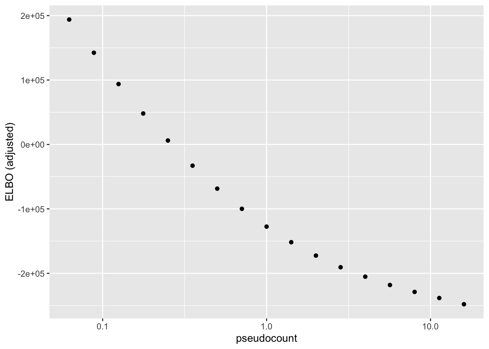
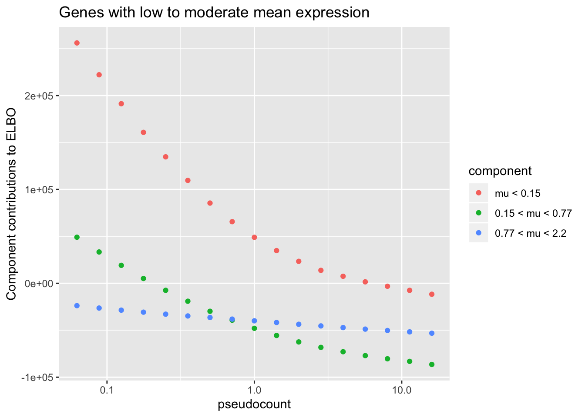
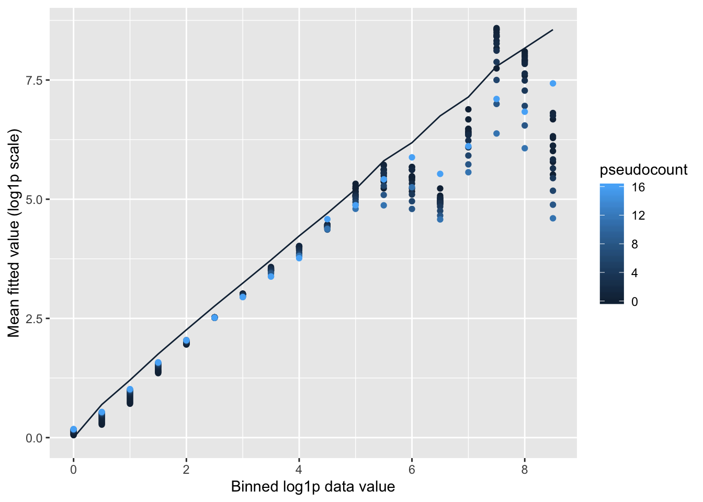
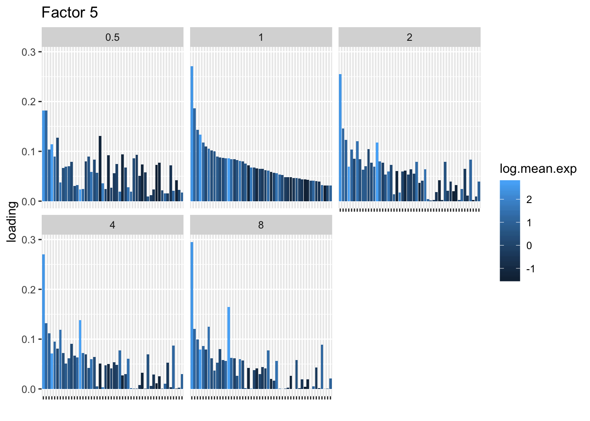
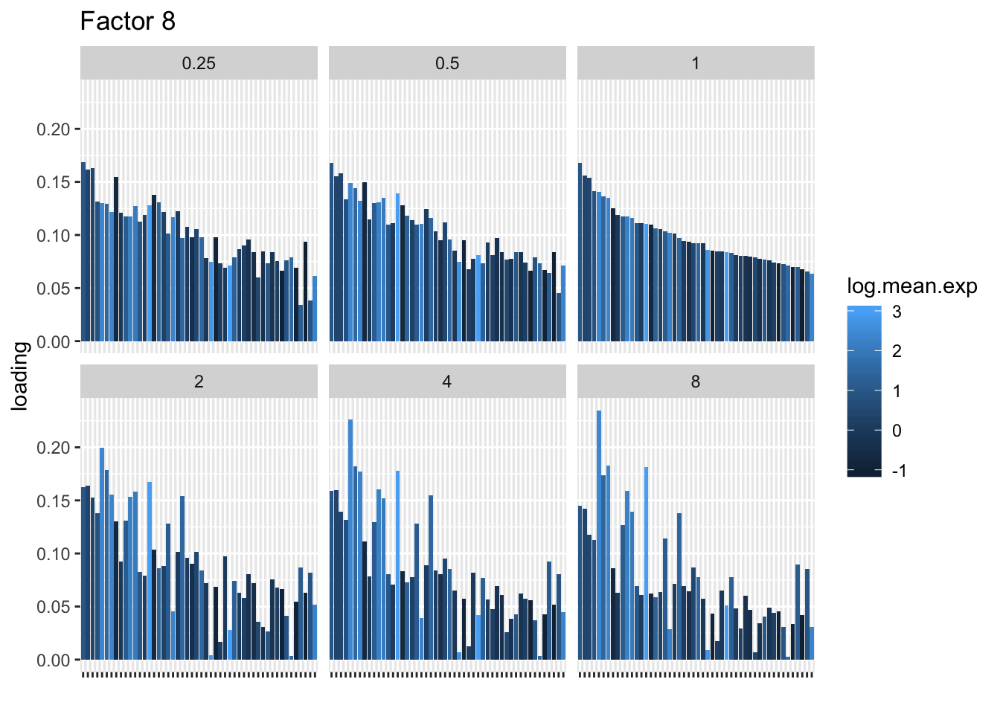

Pseudocounts
Jason Willwerscheid
4/30/2019
Last updated: 2019-09-04
Checks: 6 0
Knit directory: scFLASH/
This reproducible R Markdown analysis was created with workflowr (version 1.2.0). The Report tab describes the reproducibility checks that were applied when the results were created. The Past versions tab lists the development history.
Great! Since the R Markdown file has been committed to the Git repository, you know the exact version of the code that produced these results.
Great job! The global environment was empty. Objects defined in the global environment can affect the analysis in your R Markdown file in unknown ways. For reproduciblity it’s best to always run the code in an empty environment.
The command set.seed(20181103) was run prior to running the code in the R Markdown file. Setting a seed ensures that any results that rely on randomness, e.g. subsampling or permutations, are reproducible.
Great job! Recording the operating system, R version, and package versions is critical for reproducibility.
Nice! There were no cached chunks for this analysis, so you can be confident that you successfully produced the results during this run.
Great! You are using Git for version control. Tracking code development and connecting the code version to the results is critical for reproducibility. The version displayed above was the version of the Git repository at the time these results were generated.
Note that you need to be careful to ensure that all relevant files for the analysis have been committed to Git prior to generating the results (you can use wflow_publish or wflow_git_commit). workflowr only checks the R Markdown file, but you know if there are other scripts or data files that it depends on. Below is the status of the Git repository when the results were generated:
Ignored files:
Ignored: .DS_Store
Ignored: .Rhistory
Ignored: .Rproj.user/
Ignored: code/initialization/
Ignored: data/droplet.rds
Ignored: output/backfit/
Ignored: output/prior_type/
Ignored: output/size_factors/
Ignored: output/var_type/
Untracked files:
Untracked: analysis/NBapprox.Rmd
Untracked: analysis/deleted.Rmd
Untracked: analysis/trachea4.Rmd
Untracked: code/missing_data.R
Untracked: code/pseudocount_redux/
Untracked: code/pseudocounts.R
Untracked: code/trachea4.R
Untracked: data/Ensembl2Reactome.txt
Untracked: data/hard_bimodal1.txt
Untracked: data/hard_bimodal2.txt
Untracked: data/hard_bimodal3.txt
Untracked: data/mus_pathways.rds
Untracked: docs/figure/pseudocount2.Rmd/
Untracked: output/pseudocount/
Untracked: output/pseudocount_redux/
Unstaged changes:
Modified: analysis/index.Rmd
Modified: code/backfit/backfit_fits.R
Modified: code/sc_comparisons.R
Modified: code/utils.R
Note that any generated files, e.g. HTML, png, CSS, etc., are not included in this status report because it is ok for generated content to have uncommitted changes.
These are the previous versions of the R Markdown and HTML files. If you’ve configured a remote Git repository (see ?wflow_git_remote), click on the hyperlinks in the table below to view them.
| File | Version | Author | Date | Message |
|---|---|---|---|---|
| Rmd | 9e5e15b | Jason Willwerscheid | 2019-09-04 | update to newest interface |
| html | fd05c73 | Jason Willwerscheid | 2019-05-02 | Build site. |
| Rmd | 5b0637a | Jason Willwerscheid | 2019-05-02 | wflow_publish(“analysis/pseudocount.Rmd”) |
I explore the family of transformations \[ Y = \log \left( \frac{X}{\alpha} + 1 \right), \] where \(X\) is a matrix of counts (here, scRNA-seq data). Note that, up to a constant, this is equivalent to adding a “pseudocount” to the data before taking logs: \[ Y = \log(X + \alpha) \] I prefer the former because it preserves sparsity.
For a range of “reasonable” pseudocounts (from \(2^{-4}\) to \(2^4\)), I fit flashier objects to the 158 tuft cells in the drop-seq dataset described in Montoro et al.. I retain 500 highly variable genes and then I subsample 1500 random genes from what’s left. The code used to create the tuft dataset lives here.
library(flashier)
library(Matrix)
library(reshape2)
library(plyr)
library(ggplot2)
set.seed(666)
tuft <- readRDS("./data/tuft.rds")
pseudocounts <- 2^(-8:8 / 2)
fl.list <- list()
for (i in 1:length(pseudocounts)) {
ct <- pseudocounts[i]
fl.list[[i]] <- flashier(log1p(tuft / ct),
var.type = 1, prior.family = prior.point.normal(),
greedy.Kmax = 10, fit = "greedy",
verbose.lvl = 0)
}ELBO comparison
After adjusting the ELBO using a change-of-variables formula, the ELBO is monotonically decreasing as a function of \(\alpha\):
elbo <- sapply(fl.list, `[[`, "elbo")
chg.var <- sapply(pseudocounts, function(ct) sum(log1p(tuft / ct) + log(ct)))
adj.elbo <- elbo - chg.var
elbo.df <- data.frame(pseudocount = pseudocounts, elbo = adj.elbo)
ggplot(elbo.df, aes(x = pseudocount, y = elbo)) +
geom_point() + scale_x_log10() + labs(y = "ELBO (adjusted)")
| Version | Author | Date |
|---|---|---|
| fd05c73 | Jason Willwerscheid | 2019-05-02 |
To see why, it’s useful to split the ELBO into component parts. I consider the contribution from the most lowly expressed 50% of genes, the next 30% of genes (up to the 80th quantile), and the next 10%, 5%, 4%, and 1% of genes (up to the 90th, 95th, 99th, and 100th quantiles). It’s clear that the above behavior is driven by genes with low to moderate expression levels. Only the top 5% of genes show more interesting behavior. (The KL component increases sharply for large \(\alpha\) because flashier is unable to fit the full number of factors.)
KL <- sapply(fl.list, function(fl) sum(unlist(fl$flash.fit$KL)))
elbo.breakdown <- data.frame(pseudocount = pseudocounts,
component = "KL",
value = KL)
n.cells <- ncol(tuft)
n.genes <- nrow(tuft)
gene.means <- apply(tuft, 1, mean)
sorted.genes <- order(gene.means)
for (i in 1:length(fl.list)) {
fl <- fl.list[[i]]$flash.fit
R2 <- flashier:::calc.R2(fl) # per-gene sum of squared residuals
normal.llik <- -0.5 * (n.cells * log(2 * pi / fl$tau) + fl$tau * R2)
adj.llik <- (normal.llik - rowSums(log1p(tuft / pseudocounts[i]))
- n.cells * log(pseudocounts[i]))
# Group genes by mean expression and get contribution to log likelihood
# for each group. Quantiles: 50%, 80%, 90%, 95%, 99%.
grps <- list(rep(1:6, times = n.genes * c(.5, .3, .1, .05, .04, .01)))
grp.contribs <- aggregate(adj.llik[sorted.genes], grps, sum)$x
elbo.breakdown <- rbind(elbo.breakdown,
data.frame(pseudocount = pseudocounts[i],
component = paste0("Group", 1:6),
value = grp.contribs))
}
thresh <- signif(quantile(gene.means, c(.5, .8, .9, .95, .99)), 2)
ggplot(subset(elbo.breakdown,
component %in% c("Group1", "Group2", "Group3")),
aes(x = pseudocount, y = value, color = component)) +
geom_point() + scale_x_log10() +
scale_color_discrete(labels = c(paste("mu <", thresh[1]),
paste(thresh[1:2], "< mu <", thresh[2:3]))) +
labs(y = "Component contributions to ELBO",
title = "Genes with low to moderate mean expression")
| Version | Author | Date |
|---|---|---|
| fd05c73 | Jason Willwerscheid | 2019-05-02 |
ggplot(subset(elbo.breakdown,
!(component %in% c("Group1", "Group2", "Group3"))),
aes(x = pseudocount, y = value, color = component)) +
geom_point() + scale_x_log10() +
scale_color_discrete(labels = c("KL",
paste(thresh[3:4], "< mu <", thresh[4:5]),
paste("mu >", thresh[5]))) +
labs(y = "Component contributions to ELBO",
title = "KL and genes with high mean expression")
| Version | Author | Date |
|---|---|---|
| fd05c73 | Jason Willwerscheid | 2019-05-02 |
Missing data imputation: MSE
Here I do a CV-style analysis. I randomly split the data into 20 folds. For each, I delete the data, impute the missing data using posterior means, and then calculate MSE.
These calculations are fraught, since the MSE for all fits needs to be calculated on the same scale. Using the scale of the original counts is not a good idea because the MSE will be driven by a few very large counts. It’s better to use a \(\log(x + c)\) scale, but the choice of \(c\) will have a large effect on the results (generally favoring \(\alpha = c\)):
pseudo2 <- 2^{-4:4/2}
imputation.res <- data.frame(rep(list(numeric(0)), 3))
set.seed(666)
shuffle <- sample(1:length(tuft))
n.missing <- length(tuft) / 20
n.folds <- 20
for (j in 1:n.folds) {
cat("FOLD: ", j, "\n")
missing.data <- tuft
missing.idx <- shuffle[1:n.missing + n.missing * (j - 1)]
missing.data[missing.idx] <- NA
for (i in 1:length(pseudo2)) {
cat("PSEUDOCOUNT: ", i, "\n")
ct <- pseudo2[i]
fl <- flashier(log1p(missing.data / ct),
var.type = 1, prior.type = "point.normal",
greedy.Kmax = 10, backfit = "none",
verbose.lvl = 0)
true.vals <- tuft[missing.idx]
preds <- ct * exp(flashier:::lowrank.expand(fl$fit$EF)[missing.idx])
shift.preds <- pmax(preds - ct, 0)
log1p.err <- mean((log1p(shift.preds) - log1p(true.vals))^2)
log0.5p.err <- mean((log1p(2 * shift.preds) - log1p(2 * true.vals))^2) / 2
log2p.err <- mean((log1p(shift.preds / 2) - log1p(true.vals / 2))^2) * 2
spearman <- cor(preds, true.vals, method = "spearman")
imputation.res <- rbind(imputation.res,
data.frame(pseudocount = pseudo2[i],
fold = j,
metric = c("log1p.err", "log0.5p.err",
"log2p.err", "spearman"),
value = c(log1p.err, log0.5p.err,
log2p.err, spearman)))
}
}
saveRDS(imputation.res, "./output/pseudocount/imputation_res.rds")# Convert to use relative MSEs.
impute <- readRDS("./output/pseudocount/imputation_res.rds")
n.folds <- max(impute$fold)
pseudo2 <- unique(impute$pseudocount)
impute$pseudocount <- signif(impute$pseudocount, 2)
impute <- acast(impute, metric + fold ~ pseudocount)
base.mses <- c(impute[1:n.folds, which(pseudo2 == 0.5)],
impute[n.folds + 1:n.folds, which(pseudo2 == 1)],
impute[2 * n.folds + 1:n.folds, which(pseudo2 == 2)],
impute[3 * n.folds + 1:n.folds, which(pseudo2 == 1)])
impute <- impute - base.mses
impute <- melt(impute, varnames = c("metric_fold", "pseudocount"),
as.is = TRUE)
impute$metric <- factor(sapply(strsplit(impute$metric_fold, "_", 1), `[`, 1))
ggplot(subset(impute, metric == "log0.5p.err"),
aes(x = pseudocount, y = value)) +
geom_boxplot() + labs(y = "Relative MSE (relative to log(X + 0.5) fit)",
title = "log(X + 0.5) scale")
| Version | Author | Date |
|---|---|---|
| fd05c73 | Jason Willwerscheid | 2019-05-02 |
ggplot(subset(impute, metric == "log1p.err"),
aes(x = pseudocount, y = value)) +
geom_boxplot() + labs(y = "Relative MSE (relative to log(X + 1) fit)",
title = "log(X + 1) scale")
| Version | Author | Date |
|---|---|---|
| fd05c73 | Jason Willwerscheid | 2019-05-02 |
ggplot(subset(impute, metric == "log2p.err"),
aes(x = pseudocount, y = value)) +
geom_boxplot() + labs(y = "Relative MSE (relative to log(X + 2) fit)",
title = "log(X + 2) scale")
| Version | Author | Date |
|---|---|---|
| fd05c73 | Jason Willwerscheid | 2019-05-02 |
Missing data imputation: Spearman rank correlation
One can instead calculate the Spearman rank correlation for each choice of \(\alpha\). We want small predictions to correspond to small counts, and large predictions for large counts. The Spearman correlation will capture this. These results suggest that setting \(\alpha\) to be something between 0.35 and 1 is best.
ggplot(subset(impute, metric == "spearman"),
aes(x = pseudocount, y = value)) +
geom_boxplot() +
labs(y = "Spearman rank corr (relative to log1p fit)")
| Version | Author | Date |
|---|---|---|
| fd05c73 | Jason Willwerscheid | 2019-05-02 |
Shrinkage comparison
Here I compare all counts with their posterior means, binning counts to reduce noise.
Small pseudocounts strongly shrink small counts, but interestingly produce much less shrinkage for larger counts. The opposite is true for large pseudocounts, with the transition from “small” to “large” counts somewhere around \(\log(X + 1) = 2.5\) (which corresponds to \(X \approx 10\)). I prefer the behavior of the smaller pseudocounts here.
# Bin observations by log1p value, rounded down to the nearest 0.5.
bins <- as.vector(floor(2 * log1p(tuft)) / 2)
true.vals <- aggregate(as.vector(tuft), by = list(bins), mean)
shrinkage.res <- data.frame(pseudocount = 0,
bin = true.vals[, 1],
mean.fitted = log1p(true.vals[, 2]))
for (i in 1:length(fl.list)) {
ct <- pseudocounts[i]
preds <- ct * exp(flashier:::lowrank.expand(fl.list[[i]]$flash.fit$EF)) - ct
mean.table <- aggregate(as.vector(preds), by = list(bins), mean)
shrinkage.res <- rbind(shrinkage.res,
data.frame(pseudocount = ct,
bin = mean.table[, 1],
mean.fitted = log1p(mean.table[, 2])))
}
ggplot(shrinkage.res, aes(x = bin, y = mean.fitted, color = pseudocount)) +
geom_point(data = subset(shrinkage.res, pseudocount > 0)) +
geom_line(data = subset(shrinkage.res, pseudocount == 0)) +
labs(x = "Binned log1p data value", y = "Mean fitted value (log1p scale)")
| Version | Author | Date |
|---|---|---|
| fd05c73 | Jason Willwerscheid | 2019-05-02 |
Comparison of factor loadings
To see how much of a difference is made with respect to individual factors, I first align the factors, using the log1p fit as reference. One sees, for example, that the same 10 factors are selected for \(\alpha \in \{0.5, 0.71, 1, 2\}\), but only 6 factors are shared between \(\alpha = 0.25\) or \(\alpha = 0.35\) and \(\alpha = 1\). (I judge factor \(k\) for pseudocount \(\alpha\) to be the “same” as factor \(k'\) for pseudocount \(\alpha'\) if \(l_{\alpha_k}^T l_{\alpha'_{k'}} > 0.7\), where the \(l\)s are \(l_2\)-normalized loadings vectors.)
# Match up factors.
log1p.idx <- which(pseudocounts == 1)
log1p.LL <- fl.list[[log1p.idx]]$loadings.pm[[1]]
factor.idx <- lapply(fl.list, function(fl) {
corr <- abs(crossprod(fl$loadings.pm[[1]], log1p.LL))
apply(corr, 1, function(x) if (max(x) > .7) which.max(x) else NA)
})
log1p.K <- ncol(log1p.LL)
factor.mat <- sapply(1:log1p.K,
function(i) sapply(factor.idx,
function(idx) i %in% idx))
factor.df <- data.frame(pseudocount = rep(factor(signif(pseudocounts, 2)),
log1p.K),
log1p.k = factor(rep(1:log1p.K,
each = length(pseudocounts))),
is.represented = as.vector(factor.mat))
ggplot(factor.df, aes(x = log1p.k, y = pseudocount, fill = is.represented)) +
geom_tile(color = "white") + scale_fill_grey()
| Version | Author | Date |
|---|---|---|
| fd05c73 | Jason Willwerscheid | 2019-05-02 |
I choose a few factors that line up and inspect the loadings. The following plots show how loadings vary across pseudocounts for the top 50 genes in the log1p fit.
# Look at how a few factors vary.
top.genes <- 50
log.mean.exp <- log(apply(tuft, 1, mean))
for (k in c(2, 5, 8)) {
match.k <- lapply(factor.idx, function(idx) which(idx == k))
LL <- mapply(FUN = function(fl, match.k) {
if (length(match.k) > 0) {
return(fl$loadings.pm[[1]][, match.k])
} else {
return(NULL)
}
}, fl.list, match.k, SIMPLIFY = FALSE)
names(LL) <- factor(signif(pseudocounts, 2))
log1p.order <- order(LL[[log1p.idx]], decreasing = TRUE)
LL[sapply(LL, is.null)] <- NULL
LL.mat <- sapply(LL, `[`, log1p.order[1:top.genes])
LL.genes <- factor(rownames(LL.mat), levels = as.character(rownames(LL.mat)))
LL.df <- data.frame(gene = rep(LL.genes, ncol(LL.mat)),
log.mean.exp = rep(log.mean.exp[log1p.order[1:top.genes]],
ncol(LL.mat)),
pseudocount = rep(names(LL), each = nrow(LL.mat)),
loading = abs(as.vector(LL.mat)))
plt <- ggplot(subset(LL.df, pseudocount %in% c(0.25, 0.5, 1, 2, 4, 8)),
aes(x = gene, y = loading)) +
geom_bar(stat = "identity", aes(fill = log.mean.exp)) +
theme(axis.text.x = element_blank()) + facet_wrap(~pseudocount) +
labs(x = "", title = paste("Factor", k))
print(plt)
}
| Version | Author | Date |
|---|---|---|
| fd05c73 | Jason Willwerscheid | 2019-05-02 |

| Version | Author | Date |
|---|---|---|
| fd05c73 | Jason Willwerscheid | 2019-05-02 |

| Version | Author | Date |
|---|---|---|
| fd05c73 | Jason Willwerscheid | 2019-05-02 |
Factor mean expression and sparsity
Qualitatively, it’s clear that the choice of pseudocount makes an important difference in individual gene loadings. To attempt to generalize, I calculate the average log mean expression for each factor, where the log mean expression for each gene is weighted by its squared factor loading. With the exception of factor 4, larger pseudocounts tend to favor more highly expressed genes. I plot everything relative to the log1p fit.
# Calculate weighted log.mean.exp for each factor.
all.lme <- lapply(fl.list, function(fl) {
apply(fl$loadings.pm[[1]], 2, function(x) {
sum(x^2 * log.mean.exp)})
})
# Sparsity.
all.sprs <- lapply(fl.list, function(fl) {
sapply(fl$fitted.g[[1]], function(x) x$pi[1])
})
lme.mat <- mapply(function(idx, lme) {
lme[sapply(1:log1p.K, function(k) {
if (k %in% idx) which(k == idx)[1] else NA
})]
}, factor.idx, all.lme)
# Make relative to alpha = 1.
lme.mat <- lme.mat - lme.mat[, log1p.idx]
sprs.mat <- mapply(function(idx, sprs) {
sprs[sapply(1:log1p.K, function(k) {
if (k %in% idx) which(k == idx)[1] else NA
})]
}, factor.idx, all.sprs)
sprs.mat <- sprs.mat / sprs.mat[, log1p.idx]
sprs.mat <- sprs.mat[-1, ]
lme.df <- data.frame(pseudocount = rep(factor(signif(pseudocounts, 2)),
log1p.K),
log1p.k = factor(rep(1:log1p.K,
each = length(pseudocounts))),
lme = as.vector(t(lme.mat)))
sprs.df <- data.frame(pseudocount = rep(factor(signif(pseudocounts, 2)),
log1p.K - 1),
log1p.k = factor(rep(2:log1p.K,
each = length(pseudocounts))),
sparsity = as.vector(t(sprs.mat)))
ggplot(lme.df, aes(x = log1p.k, y = pseudocount, fill = lme)) +
geom_tile(color = "white") +
labs(title = "Weighted average of log mean expression (relative to log1p fit)")
| Version | Author | Date |
|---|---|---|
| fd05c73 | Jason Willwerscheid | 2019-05-02 |
I also calculate the sparsity of each factor, which is simply calculated as the estimated \(\pi_0\) for the prior on the gene loadings. Again, everything is plotted relative to the log1p fit.
ggplot(sprs.df, aes(x = log1p.k, y = pseudocount, fill = sparsity)) +
geom_tile(color = "white") +
labs(title = "Sparsity (relative to log1p fit)")
| Version | Author | Date |
|---|---|---|
| fd05c73 | Jason Willwerscheid | 2019-05-02 |
Theory
The model that EBMF fits is \[ \log(X_{ij} + \alpha) \sim N(\mu_{ij}, \sigma_i^2) \] A more plausible model for the data-generating process is \[ X_{ij} \sim \text{Poisson}(\lambda_{ij}),\ \log(\lambda_{ij}) \sim N(\mu_{ij}', \sigma_i^{2'}), \] with low-rank structure in the matrix \(\mu'\).
In other words, one believes that there’s low-rank structure in the matrix \(\mathbb{E} (\log \lambda)\), not in the matrix \(\mathbb{E} ( \log(X_{ij} + \alpha))\). So it makes sense to choose \(\alpha\) so that \[\mu = \mathbb{E}(\log(X + \alpha)) \approx \mathbb{E} (\log \lambda)\] Using a second-order Taylor expansion gives \[ \mathbb{E}(\log(X + \alpha)) = \mathbb{E}(\mathbb{E}(\log(X + \alpha)) \mid \lambda) \approx \mathbb{E}\left( \log(\lambda + \alpha) - \frac{\lambda}{2(\lambda + \alpha)^2} \right)\]
For \(\lambda\) fixed, we could choose \(\alpha\) by solving \[ \log(\lambda + \alpha) - \log(\lambda) - \frac{\lambda}{2(\lambda + \alpha)^2} = 0\]
For large \(\lambda\), \[ \log \left(1 + \frac{\alpha}{\lambda} \right) - \frac{\lambda}{2(\lambda + \alpha)^2} \approx \frac{\alpha}{\lambda} - \frac{1}{2\lambda}, \] so the solution is \(\alpha \approx 0.5\).
Other solutions can be found numerically.
alpha_function <- function(alpha, lambda) {
log(1 + alpha / lambda) - 0.5 * lambda / (lambda + alpha)^2
}
lambdas <- 2^{-60:60/8}
alphas <- sapply(lambdas,
function(lambda) uniroot(alpha_function, c(0, 1), lambda)$root)
alpha.df <- data.frame(lambda = lambdas, alpha = alphas)
ggplot(alpha.df, aes(x = lambda, y = alpha)) + geom_line() +
scale_x_log10()
| Version | Author | Date |
|---|---|---|
| fd05c73 | Jason Willwerscheid | 2019-05-02 |
One could simply choose \(\alpha = 0.5\), or one chould choose different \(\alpha_{ij}\)s for each count. To preserve sparsity in the latter case, one would need to assign the same pseudocount \(\alpha_0\) to all zero counts and then reparametrize as \[ Y_{ij} = \log \left (\frac{X_{ij}}{\alpha_0} + \frac{\alpha_{ij}}{\alpha_0} \right)\]
sessionInfo()R version 3.5.3 (2019-03-11)
Platform: x86_64-apple-darwin15.6.0 (64-bit)
Running under: macOS Mojave 10.14.6
Matrix products: default
BLAS: /Library/Frameworks/R.framework/Versions/3.5/Resources/lib/libRblas.0.dylib
LAPACK: /Library/Frameworks/R.framework/Versions/3.5/Resources/lib/libRlapack.dylib
locale:
[1] en_US.UTF-8/en_US.UTF-8/en_US.UTF-8/C/en_US.UTF-8/en_US.UTF-8
attached base packages:
[1] stats graphics grDevices utils datasets methods base
other attached packages:
[1] ggplot2_3.2.0 plyr_1.8.4 reshape2_1.4.3 Matrix_1.2-15
[5] flashier_0.1.15
loaded via a namespace (and not attached):
[1] Rcpp_1.0.1 pillar_1.3.1 compiler_3.5.3
[4] git2r_0.25.2 workflowr_1.2.0 iterators_1.0.10
[7] tools_3.5.3 digest_0.6.18 tibble_2.1.1
[10] evaluate_0.13 gtable_0.3.0 lattice_0.20-38
[13] pkgconfig_2.0.2 rlang_0.3.1 foreach_1.4.4
[16] yaml_2.2.0 parallel_3.5.3 ebnm_0.1-24
[19] xfun_0.6 withr_2.1.2 dplyr_0.8.0.1
[22] stringr_1.4.0 knitr_1.22 fs_1.2.7
[25] tidyselect_0.2.5 rprojroot_1.3-2 grid_3.5.3
[28] glue_1.3.1 R6_2.4.0 rmarkdown_1.12
[31] mixsqp_0.1-119 purrr_0.3.2 ashr_2.2-38
[34] magrittr_1.5 whisker_0.3-2 backports_1.1.3
[37] scales_1.0.0 codetools_0.2-16 htmltools_0.3.6
[40] MASS_7.3-51.1 assertthat_0.2.1 colorspace_1.4-1
[43] labeling_0.3 stringi_1.4.3 lazyeval_0.2.2
[46] munsell_0.5.0 doParallel_1.0.14 pscl_1.5.2
[49] truncnorm_1.0-8 SQUAREM_2017.10-1 crayon_1.3.4